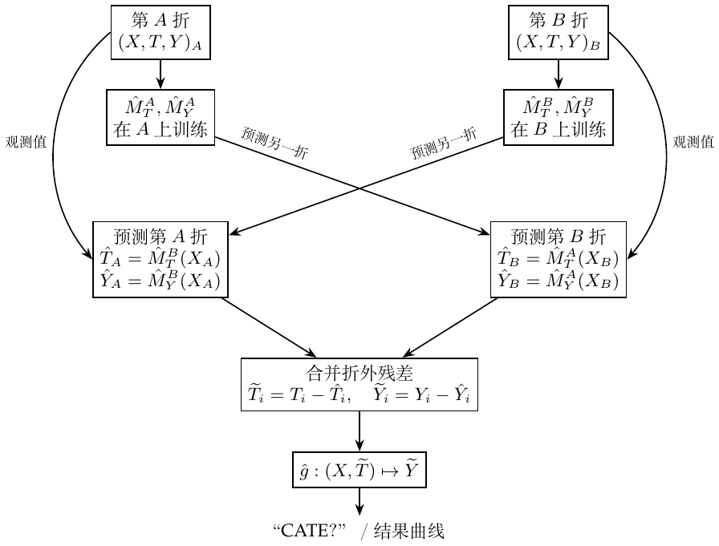

第22章：去偏／正交机器学习
参考“Double Machine Learning for Treatment and Causal Parameters”（2016）。ML 用于估计干扰函数。销量例子中，价格以及温度、成本、星期几等特征可能有复杂联系；混杂使朴素价格回归不可靠。
Frisch–Waugh–Lovell.
对 \(\hat Y=X_1\hat\beta_1+X_2\hat\beta_2\)，\(X_1,X_2\) 为特征矩阵（每列一个特征，每行一个观测），\(\hat\beta_1,\hat\beta_2\) 取列系数向量。按下列步骤可得到相同的 \(X_1\) 系数：
将 \(Y\) 对 \(X_2\) 回归，得到 \(\hat Y^*=P_{X_2}Y\)。
将 \(X_1\) 对 \(X_2\) 回归，得到 \(\hat X_1=P_{X_2}X_1\)。
取 \(\widetilde X_1=X_1-\hat X_1\) 和 \(\widetilde Y=Y-\hat Y^*\)。
将 \(\widetilde Y\) 对 \(\widetilde X_1\) 回归，恢复 \(\hat\beta_1\)。
所以 \((Y-\widehat{Y\sim X})\sim(T-\widehat{T\sim X})\) 可以估计下式中的 \(\tau\)： \[Y_i-E[Y_i\mid X_i]=\tau\{T_i-E[T_i\mid X_i]\}+\varepsilon_i.\]
加强版 FWL：用 ML 估计 ATE。
\[Y_i-\hat M_Y(X_i)=\tau\{T_i-\hat M_T(X_i)\}+\varepsilon_i.\] \(\hat M_Y\) 估计 \(E[Y\mid X]\)，是去噪模型，解释 \(X\) 带来的 \(Y\) 变异。\(\hat M_T\) 估计 \(E[T\mid X]\)，是去偏模型，去除与 \(X\) 相关的处理分配偏差。
用灵活的 ML 回归 \(M_Y\)，从特征 \(X\) 估计结果 \(Y\)。
用 \(M_T\) 从 \(X\) 估计处理 \(T\)。
得到残差 \(\widetilde Y=Y-M_Y(X)\) 和 \(\widetilde T=T-M_T(X)\)。
将结果残差对处理残差回归：\(\widetilde Y=\alpha+\tau\widetilde T\)。
我的理解是“两次预测，一次回归”。在常效应部分线性模型 \(Y=\tau T+g(X)+\varepsilon\)、\(E[\varepsilon\mid T,X]=0\) 下，\(\tau\) 是因果斜率（二元处理时为 ATE）。二元效应异质时，合并残差回归针对的是 \(E[e(X)(1-e(X))\tau(X)]/E[e(X)(1-e(X))]\)。
我对过拟合的解释。 若 \(M_Y\) 过拟合，它不只拟合了 \(Y\) 与 \(X\) 的关系，还吞掉了一部分 \(Y\) 与 \(T\) 的关系。因果关系被结果模型吸收，没有留给残差回归，因此最后的效应可能偏向零。若 \(M_T\) 过拟合，它解释了过多 \(T\) 的变异，剩下的处理残差方差很小，最后效应估计的方差就很大。我把这与拟合倾向得分过于极端联系起来。但残差接近零也可能来自过拟合，并不能单凭它就判定真实倾向得分违反正值性。
为解决过拟合，把数据分成 \(K\) 折。每次用其余 \(K-1\) 折训练 ML 模型，在留出的一折上计算残差。合并所有折的预测／残差，再拟合 \(\widetilde Y=\alpha+\tau\widetilde T\)。
CATE 与 R-learner。
让斜率随 \(X\) 变化： \[Y_i-M_Y(X_i)=\tau(X_i)\{T_i-M_T(X_i)\}+\varepsilon_i.\] 最后一层回归可为 \(\widetilde Y_i=\alpha+\beta_1\widetilde T_i+\beta_2X_i\widetilde T_i+\varepsilon_i\)。最终模型用 \(M(\mathrm{Price}=1,X_i)-M(\mathrm{Price}=0,X_i)\) 估计销量效应。R-learner。
非参数双重／去偏 ML。
对于价格与销量这样的连续关系，写作 \[Y_i=\hat M_Y(X_i)+\tau(X_i)\{T_i-\hat M_T(X_i)\}+\hat\varepsilon_i.\] 整理残差： \[\hat\varepsilon_i=\{Y_i-\hat M_Y(X_i)\}-\tau(X_i)\{T_i-\hat M_T(X_i)\}.\] 最小化残差平方得到 R-loss。在所述识别条件下，它估计二元处理 CATE；若响应对连续处理线性，则估计条件斜率： \[\begin{aligned} \hat L_n(\tau)&=\frac1n\sum_{i=1}^n\left[\{Y_i-\hat M_Y(X_i)\}-\tau(X_i)\{T_i-\hat M_T(X_i)\}\right]^2\\ &=\frac1n\sum_{i=1}^n(\widetilde Y_i-\tau(X_i)\widetilde T_i)^2\\ &=\frac1n\sum_{i=1}^n\widetilde T_i^2\left(\frac{\widetilde Y_i}{\widetilde T_i}-\tau(X_i)\right)^2. \end{aligned}\]
我的理解。 这就是用任意预测模型预测 \(\widetilde Y_i/\widetilde T_i\)，权重为 \(\widetilde T_i^2\)。残差为零时使用未除开的平方损失，不计算这个比值。
哪里是非参数？ 方程 \(\widetilde Y_i=\tau(X_i)\widetilde T_i+e_i\) 对残差处理仍然线性，但 \(\tau\) 可以灵活地随 \(X\) 变化。对于真正非线性的处理响应，条件 R-loss 的最小化解为 \[\tau^*(x)=\frac{\operatorname{Cov}(T,Y\mid X=x)}{\operatorname{Var}(T\mid X=x)}.\] 这是条件投影斜率，并不自动等于某一处理值处的导数。这一区别引出下一步尝试。
Non-Scientific Double/Debiased ML：未完成
未完成。 沿着教材的非线性构造，我想理清如何从个体数据点得到反事实预测——“CATE？”——乃至整条结果曲线。把 \[\widetilde Y_i=\tau(X_i)\widetilde T_i+e_i\] 换成对处理残差非线性的函数： \[\widetilde Y_i=g(X_i,\widetilde T_i)+e_i.\] 先用 \(X\) 预测处理并取残差，再用 \((X,\widetilde T)\) 拟合结果残差。可以尝试合适的 ML 模型，例子使用 LGBM；拟合输出为 \(\widehat{\widetilde Y}\)。
我的逐步理解。
设 \(Y\) 为销量，\(T\) 为价格，\(X\) 为协变量。
用五折 LGBM 交叉预测得到 \(\hat Y=\hat M_Y(X)\)、\(\hat T=\hat M_T(X)\)，每折都由其他折训练的模型预测。
计算 \(\widetilde Y=Y-\hat Y\)、\(\widetilde T=T-\hat T\)。
用 \((\widetilde T,X)\) 拟合 \(\widetilde Y\)，将最终模型记为
finalM，或 \(\hat g\)。对新的 \(X\)，平均五个处理模型的预测，得到 \(\hat T'\)。对每个假想反事实价格 \(T_{\rm new}\)，使用 \[\widetilde T'=T_{\rm new}-\hat T',\qquad \widetilde Y'=\hat g(X,\widetilde T').\] 训练与预测必须使用同一残差方向。1
加回基线预测：\(\hat Y(T_{\rm new},X)=\hat M_Y(X)+\widetilde Y'\)。结果残差以零为中心；加回基线恢复结果水平。
这里得到的是结果曲线；效应还要通过两点比较或求导得到。我还没有完成这个非线性构造的因果论证。
下面用两折画出两类干扰模型共同的交叉预测关系；五折时重复同一原则。

我想记住的缺点：正则化可能使因果估计收缩，具体 ML 算法也很重要。提升树给出阶梯式而非光滑曲线，也不擅长外推到未见价格，预测可能很奇怪。
补充说明：非线性拟合识别什么
固定 \(m,\ell\) 后，\(r=t-m(x)\) 在给定 \(x\) 时可逆。若一致拟合 \(g(x,r)=E[Y-\ell(X)\mid X=x,T-m(X)=r]\)，可重建 \(E[Y\mid x,t]=\ell(x)+g(x,t-m(x))\)。因果响应还需要可交换性与支持条件。这个灵活残差学习器不会自动继承 R-loss 的正交性或收敛率保证。交叉拟合控制使用自身观测造成的过拟合，识别假设和足够准确的干扰函数估计仍然必要。
教材第22章文字把减法方向写反，并把结果残差预测标为“Price”；其代码采用反事实价格减预测价格。这里按代码与训练残差定义统一。↩︎